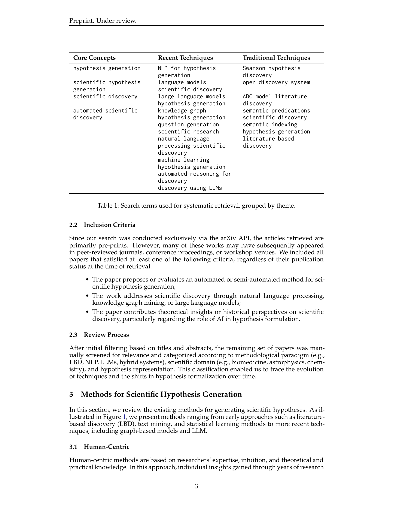

Figure 1
LLM 시대에 과학적 가설 생성(Scientific Hypothesis Generation, SHG)을 위한 방법론을 체계적으로 정리한 서베이 논문이다. 전통적 문헌 기반 발견(Literature-Based Discovery, LBD)부터 텍스트 마이닝, 지도학습, 그래프 기반 방법, 그리고 최신 LLM 기반 접근법(프롬프팅, 파인튜닝, RAG, 지식 그래프 통합, 멀티 에이전트 시스템)까지를 아우르는 분류 체계(taxonomy)를 제시한다. 생성된 가설의 품질 평가 방법론(전문가 평가, 자동화 메트릭, 신규성 평가, 분야별 평가)도 종합하며, 환각(hallucination), 해석 가능성, 편향, 멀티모달 통합, 인간-AI 협업 등 핵심 도전과제와 미래 방향을 논의한다.
과학 문헌의 폭발적 증가와 학문 분야 간 분절화(disciplinary fragmentation)로 인해, 연구자가 분야를 횡단하며 새로운 가설을 도출하기 어려워지고 있다. LLM이 방대한 과학 텍스트를 처리·종합하여 가설 생성을 보조할 가능성이 부각되었으나, 이 분야의 방법론, 평가 전략, 도전과제를 체계적으로 정리한 참고 문헌이 부재했다.
총평: LLM 기반 과학적 가설 생성이라는 시의적절한 주제를 다루며, 전통적 LBD부터 최신 LLM 기법까지의 진화를 일관된 분류 체계로 정리한 유용한 참고 문헌이다. 그러나 서베이 논문으로서 검색 범위가 arXiv cs.CL로 한정된 점, 각 방법론 간 정량적 비교 실험이 부재한 점, 그리고 2024~2025년의 급속한 발전(AI Scientist, SciMON 등)을 충분히 반영하지 못한 점이 아쉽다. 과학적 가설 생성 연구의 입문자에게는 좋은 출발점이 될 수 있으나, 실무적 가이드라인을 기대하는 독자에게는 구체성이 부족하다.
총평: LLM 시대 과학적 가설 생성 방법론을 전통 LBD부터 멀티 에이전트까지 통합 분류한 서베이로 입문 참고 자료로서 가치가 있다.